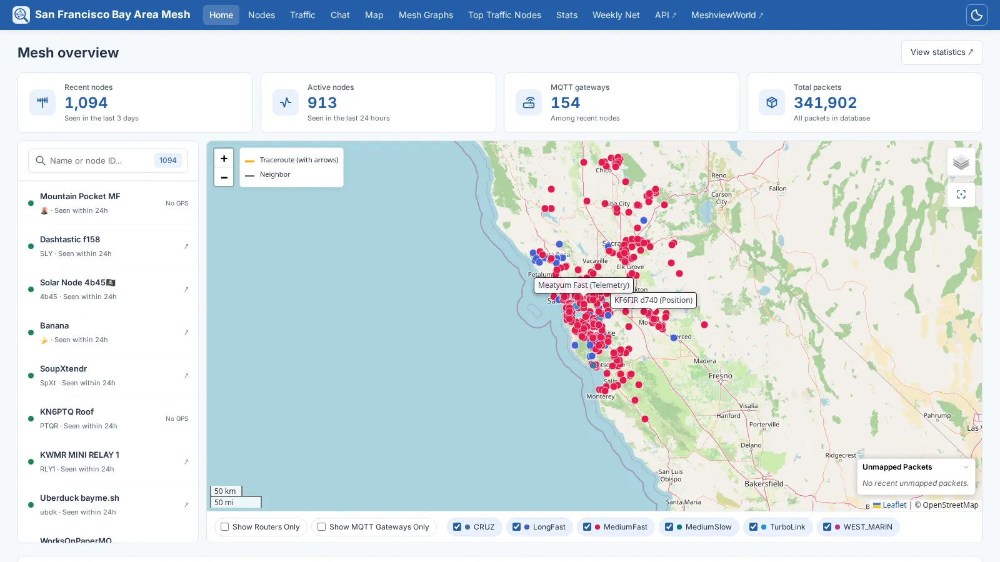
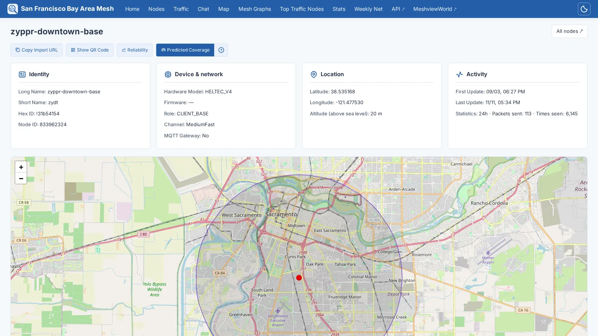
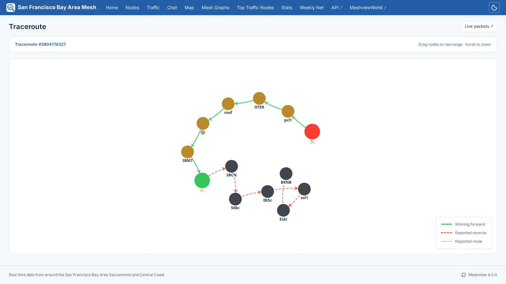
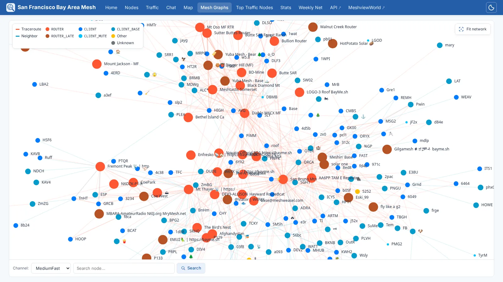
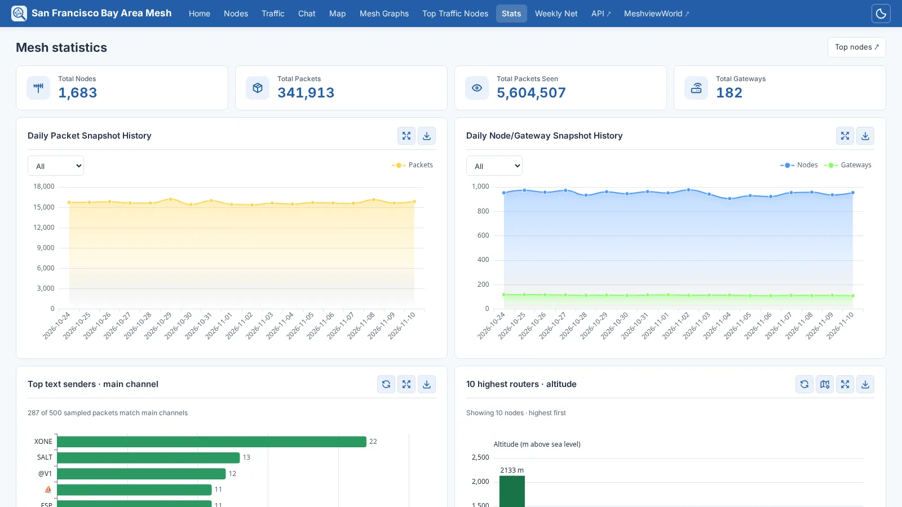
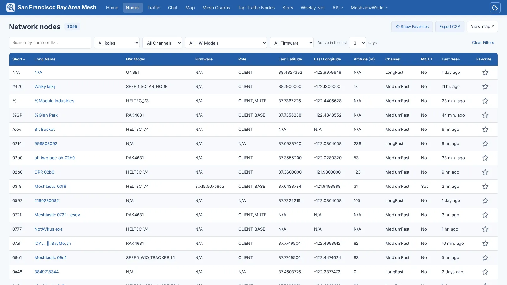
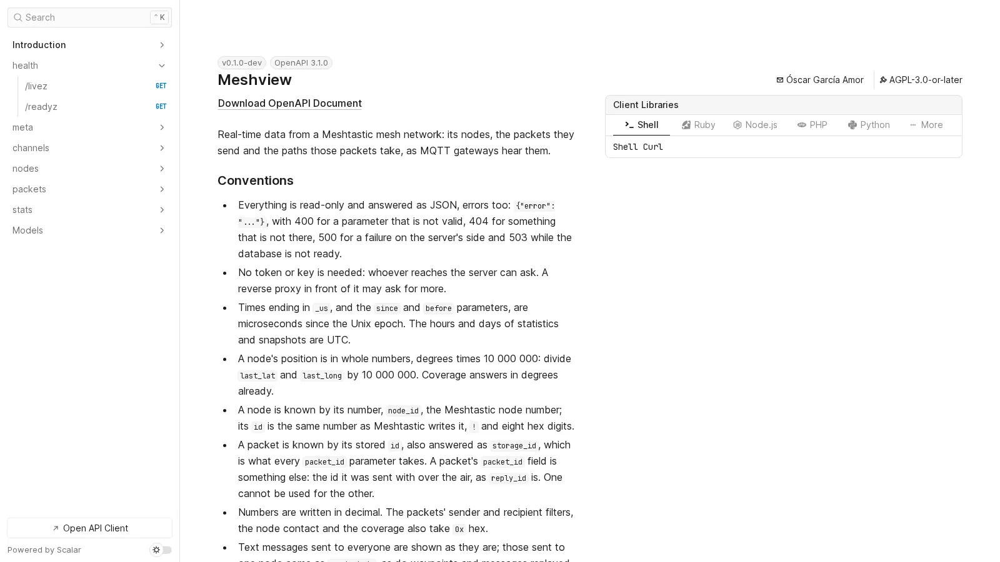

See your Meshtastic mesh, live.
Meshview reads a Meshtastic mesh network from an MQTT broker and shows it as it happens: a map of its nodes, the packets they send, the paths those packets take, and statistics about all of it.
This is Meshview rewritten in Rust, taking over from the
Python version:
the same pages, the same API and the same database, which it takes over as
it is. One static binary with the whole web inside, in English, Spanish and
Russian. Every change to master is built, tested and published as an
image, and it already runs a public mesh.
Live map
Every node heard, coloured by the preset of its channel, with the links traceroutes and neighbour reports reveal, and each packet blinking as it arrives.
A page per node
Its telemetry and neighbours, a QR code to add it as a contact, and how far it is predicted to reach, from the ITS terrain model.
Traceroutes
Drawn there and back, from what every gateway that heard them reported.
Statistics
Packets, nodes and gateways day by day, the busiest nodes, the chat, every packet as it comes, and a kiosk mode for a screen on a wall.
From MQTT
Plain or over TLS, into SQLite, with a daily cleanup and snapshot, and consistent backups when you ask for them.
One process, or many
Everything in one, or one ingester that writes and as many web servers as you like reading beside it, with probes for Kubernetes.
An API
Versioned, and documented by the server itself in an interactive reference, in English, Spanish and Russian.
Free software
Under the GNU AGPL, version 3 or later, written in Rust. Contributions welcome.
Screens
The San Francisco Bay Area Mesh, as Meshview shows it.
Mesh overview

Over a thousand nodes, packets labelled on the map as they are heard, and the nodes beside it to search.
Node

Who it is, what it runs, where it is, how much it is heard, and how far it is predicted to reach.
Traceroute

The way there in green, the way back in red.
Mesh graph

Every link heard in the last twelve hours, nodes coloured by role.
Mesh statistics

Day by day, from daily snapshots that outlive the packets they were counted from.
Network nodes

Filtered, sorted and paged by the server, so thousands of nodes stay quick.
API reference

At /api/docs on every Meshview, built from the code that answers.
Run it
A container, a configuration file, and a broker to read.
Container
podman run -d --name meshview \
-p 8081:8081 \
-v meshview-data:/data \
-v ./config.toml:/etc/meshview/config.toml:ro \
ghcr.io/meshview/meshview:latestThe database lives in /data, and the configuration, read only, in /etc/meshview. latest is the newest release, and every version has a tag of its own, for amd64 and arm64.
Feeling brave? master is rebuilt on every change: tomorrow's features today, with bugs guaranteed and no extra charge.
Configuration
[mqtt]
server = "mqtt.example.org"
topics = ["msh/EU_868/#"]
[site]
title = "Our mesh"
language = "en"TOML, and any key can also come from the environment, as MESHVIEW_MQTT__SERVER. See the configuration reference and the deployment guide.
Coming from the Python version
Stop it, convert its config.ini with scripts/convert-config.py, and start Meshview on the same database: it takes it over as it is, every packet and node included, and the old API addresses redirect to the new ones. The migration guide has the details, and how to go back.